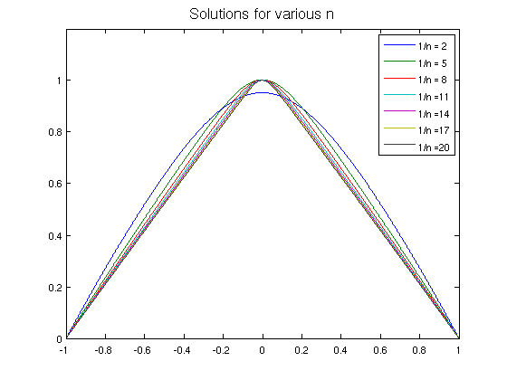

Nonlinear ODE modeling solar magnetic fields
Nick Hale & Natasha Flyer, September 2010
(Chebfun example ode/SolarFields.m)
This code demonstrates how to solve the nonlinear boundary value problem
(1-mu^2)*P" + n*(n+1)*P + a^2*(1+n)/n*P^(1+2/n), P(-1) = P(1) = 0
which arises from the modeling solar force-free magnetic fields [1, eqn (8)]. A brief derivation is given below. Of interest is the behaviour of the solution in the limit n -> 0. See also [2, section 2.5].
Set up the domain and the boundary conditions.
d = [-1,1]; % Define the domain mu = chebfun('mu',d); % Linear function mu N = chebop(d); % Initialise the operator N.lbc = 0; N.rbc = 0; % Dirichlet boundary conditions e = 1-mu.^2; % Initial guess a = 1;
Warning: usage: [bnds,rowd,sens,rowp,rowg] = mu(matin,blk,opt)
Apply continuation in the variable n.
nn = 1./(2:3:20); k = 1; FS = 'fontsize'; LW = 'linewidth'; MS = 'markersize'; for n = nn N.guess = e(:,k); % Initial guess (with continuation) % Define the operator for the n N.op = @(P) diag(1-mu.^2)*diff(P,2) + n*(n+1)*P + a^2*(1+n)/n*P.^round(1+2/n); e(:,k+1) = N\0; % Solve the nonlinear system via backslash plot(e(:,k+1),LW,1.6) % Plot solution title(['1/n = ',num2str(1/n)],FS,16) ylim([0 1.2]), drawnow % Catch our breath & marvel at the beauty k = k+1; end plot(e(:,2:end),LW,1.6), ylim([0 1.2]) % Plot all the computed solutions: legend([repmat('1/n =',length(nn),1) int2str(1./nn.')]) title('Solutions for various n',FS,16)
A Brief derivation of the ODE:
The force-free magnetic field is described by
Del x B = alpha*B , B o Del alpha = 0 ,
where B is the magnetic flux function in the poloidal direction, and alpha the square root of the pressure in the toroidal direction.
The axisymmetric magnetic field can be expressed in terms of two scalar functions A and Q by
B = 1/(r*sin(t)) * ( 1/r * dA/dt r^ - dA/dr t^ + Q * phi^),
requiring that Q is a strict function of A and alpha = dQ/dA. This reduces the force-free field to
d2A/dr2 + (1-mu^2)/r^2*d2A/dmu2 + Q*dQ/dA = 0 : mu = cos(t).
Inspection shows there exist separable solutions of the form A = P(mu)/r^n, and prescribing Q(A) = a*A^(1+1/n) (i.e. a power law) where a and n are constants, the scalar function P satisfies the nonlinear ode
(1-mu^2)*P" + n*(n+1)*P + a^2*(1+n)/n*P^(1+2/n), P(-1) = P(1) = 0.
The solutions to this BVP generate the force-free fields we seek.
References:
[1] B.C. Low and Y.Q. Lou, "Modeling solar force-free magnetic fields", The Astrophysical Journal v. 352, 343-352, March 1990.
[2] N. Flyer, B. Fornberg, S. Thomas, and B. C. Low, "Magnetic Field Confinement in the Solar Corona. I. Force-free Magnetic Fields", The Astrophysical Journal v. 606, 1210-1222, May 2004.